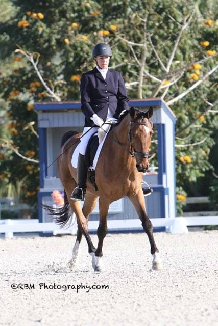

Kissinger Bigatel & BrowerRealtors®
Horse Farms for Sale in Centre County, PA & Equestrian Property in Central PA
Represented by Barb Alpert, REALTOR®, Associate Broker — a lifelong horsewoman with Kissinger Bigatel & Brower

Why work with an agent who actually keeps horses?
Most agents can sell you a house with a field behind it. Far fewer can tell you whether that field will hold up to four horses in a wet March, whether the run-in shed is sited where water will run through it, or whether that beautiful board fence is about to cost you five figures.
Barb Alpert has been a horsewoman for more than 40 years. She’s a competitive dressage rider who has shown through Prix St. Georges, earned her USDF Bronze Medal, and trains and competes in Wellington, Florida each winter. She and her husband Gary live on a small horse farm at the base of Mount Nittany, where she rides her dressage horse, Salvador, in her own arena.
She has hauled the water when the line froze. She has argued with a tractor. When she walks a farm with you, she’s evaluating it the way you will actually live in it.
What should you look for when buying a horse farm in Centre County?
A horse property is really two purchases stacked together: a house, and an agricultural operation. They get evaluated separately. Here’s the checklist we walk with every farm buyer.
Land, acreage and pasture
- Usable acreage vs. total acreage. Twenty acres of steep, wooded ridge is not twenty acres of turnout. Look at what’s flat, cleared and fenceable.
- Carrying capacity. In this part of Pennsylvania, roughly two acres of well-managed pasture per horse is a reasonable planning figure for grazing without destroying the ground — less if you dry-lot and feed hay, more on thin or steep soil.
- Soil and drainage. Our limestone valleys grow good grass; the shale-influenced ground on some ridges does not. Walk it in mud season if you possibly can.
- Grade and footing. Gentle slope sheds water and is a gift. Low flat ground that holds water becomes a soup pit by February.
Barn and outbuildings
- Structure first, cosmetics never. Sound roof, sound sills, honest framing. Paint is cheap; a failing bank barn foundation is not.
- Aisle width, stall size, ceiling height. Twelve-by-twelve stalls and a ten- to twelve-foot aisle are comfortable; older bank barns often run tighter and were built for smaller animals.
- Water and electric to the barn. Frost-free hydrants, safe wiring, adequate lighting. Retrofitting a water line to a barn is a real expense.
- Ventilation and fire safety. Airflow matters more than insulation. Check wiring, hay storage location and how a truck and trailer would get in during an emergency.
- Hay and equipment storage. Where does a year of hay go, and can a delivery truck reach it in winter?
Arenas and riding space
- Indoor arena. The single biggest value driver on a Pennsylvania horse property — and the most expensive thing to add later. If you ride through the winter, prioritize it. Sixty by one-twenty is a common serviceable size; seventy by two hundred is luxury.
- Base, not surface. Footing can be amended. A bad base has to be excavated and rebuilt. Ask what’s underneath and when it was done.
- Outdoor ring drainage. A ring that’s unusable for three days after rain is a ring you won’t use.
- Riding access. Trails, quiet township roads, or proximity to state forest land add real quality of life.
Fencing
- Type and condition. Post-and-rail, no-climb wire mesh, coated wire and vinyl all behave differently. High-tensile smooth wire with electric is common and functional; barbed wire is a genuine hazard for horses.
- Line integrity. Walk the whole perimeter. Rotting posts and sagging lines are a per-foot replacement cost you should price before closing.
- Cross-fencing. The ability to rotate paddocks is the difference between pasture and a mud lot.
Water, well and septic
- Well yield. Horses drink a lot — often eight to twelve gallons a day each, more in heat or work. Test flow rate, not just water quality.
- Water quality. Central PA limestone means hard water; test for nitrates and bacteria regardless.
- Septic capacity and location. Confirm the system, its age and its records, and where the drain field sits relative to any barn or paddock plans.
- Streams, springs and wetlands. Lovely, and regulated. Fencing horses out of a stream may be required or advisable, and wetlands limit where you can build.
Zoning, easements and agricultural programs
- Township zoning is the authority, not the listing. Every Centre County township writes its own rules on animal density, boarding, lessons, riding as a commercial use, and accessory structures. If you intend to board or teach, verify with the township in writing before you buy.
- Clean and Green (Act 319). Many Pennsylvania farm parcels are enrolled in preferential tax assessment. It saves real money, but subdividing or changing use can trigger roll-back taxes for prior years plus interest. Always confirm enrollment status and what it obligates you to.
- Agricultural security areas and conservation easements. Some parcels carry permanent restrictions on development. That may be exactly what you want — but you need to know before you write an offer.
- Right-of-way and shared drives. Long farm lanes often cross a neighbor’s ground. Get the easement language reviewed, including who maintains and plows it.
- Manure management. Pennsylvania expects a written manure management plan on most operations with livestock. Plan the storage and spreading, and site it away from waterways.
Note: zoning, tax and regulatory details vary by township and change over time. Everything above is general orientation, not legal or tax advice — verify specifics with the township, Centre County, and your own attorney or accountant before relying on them.
Selling a horse farm or equestrian property in Central PA
Farms don’t sell like houses. The buyer pool is smaller, more specific, and often shopping from outside the county — sometimes from outside the state. Marketing a farm to the general public and hoping is how a good property sits for a year.
- Marketing to horse people. The buyer for your farm may be a boarder at a barn one county over, or a rider Barb knows from the show circuit. Being genuinely inside the equestrian community is not a marketing line here.
- Presenting the operation, not just the house. Stall count, arena dimensions and base, fencing type and age, hay yield, well flow, pasture rotation, utility costs. Buyers who care will ask; having the answers ready builds trust and speeds an offer.
- Realistic appraisal expectations. Rural appraisals with significant outbuilding value are harder, and comparable sales may come from thirty miles away. Preparing for that early prevents a nasty surprise late.
- Timing and presentation. Farms show best when the grass is up and the fencing is tight. A little brush-hogging and fence repair before photos pays for itself.
See the full selling process → · Request a farm valuation →
What kinds of properties do we handle?
Full horse farms
Turnkey properties with barns, indoor or outdoor arenas, established fencing and pasture — including boarding and training operations.
Farmettes & hobby farms
Small farms near State College, typically 3–15 acres: a house, a modest barn, room for two or three horses and a garden.
Land & acreage
Land for sale in Centre County, PA for buyers who want to build the barn and the house they actually want.
Country homes with a little ground
Not every buyer wants a full operation. Sometimes it’s a quiet house, a view of the ridge and enough room to keep one horse at home.
Equestrian property, Central PA
We look beyond Centre County when it makes sense — Huntingdon, Clinton, Mifflin and Blair counties are all within reach.
Farm sellers
Owners downsizing, retiring from a boarding business, or settling an estate with farm ground involved.
Where do you look for horse property near State College?
The best equestrian ground in the county tends to sit in the valleys, where the limestone soil grows grass and the land lies flat enough to fence:
- Centre Hall and Penns Valley — the heart of it. Real farm ground, working agriculture, and the most acreage per dollar in the county.
- Boalsburg and Harris Township — smaller farmettes with a short commute to campus, at a premium.
- Bellefonte, Spring and Benner Townships — strong value, good ground, easy access to I-99.
- Pine Grove Mills and Ferguson Township — some of the county’s prettiest small holdings along the Tussey ridge.
- Port Matilda, Howard and Spring Mills — where larger acreage is still genuinely attainable.
Explore all Centre County communities →
Placeholder — farm & land search. Add an IDX search here pre-filtered to farms, land and properties with acreage in Centre County. Do not hand-list properties, which would go stale and risk MLS compliance issues.
Horse farm FAQs
How many acres do you need for horses in Pennsylvania?
As a planning rule of thumb, about two acres of good, well-managed pasture per horse lets you graze without wrecking the ground. You can absolutely keep horses on less — many people do on three to five acres total — but you’ll be feeding more hay, using a sacrifice paddock or dry lot, and managing mud and manure more actively. Township ordinances may also set their own animal density limits, so check locally.
Is it cheaper to buy a farm with an indoor arena or build one later?
Almost always cheaper to buy one already built. An indoor arena is a major structure with a site-prep, drainage and base cost before you even get to the building, and it may require zoning approval and a stormwater plan. Buying an existing arena also lets you finance it inside the mortgage rather than paying for construction separately.
Can I board horses or teach lessons on a property I buy?
It depends entirely on the township, and sometimes on deed restrictions. Boarding and lessons are often treated as commercial or agricultural business uses with their own requirements for parking, setbacks and permits. Never assume the previous owner’s use transfers — get written confirmation from the township zoning officer before you close.
What is Clean and Green, and does it affect me?
Clean and Green (Pennsylvania Act 319) is a preferential tax assessment for qualifying agricultural, forest and open-space land. It can cut property taxes substantially. The catch: subdividing the parcel or converting it to a non-qualifying use can trigger roll-back taxes covering up to seven prior years plus interest. Confirm enrollment status and obligations before you buy, and talk to your accountant.
What inspections should I get on a horse property?
Everything you’d get on a house — general, radon, wood-destroying insects — plus well flow rate and water quality, a septic inspection, and a hard look at outbuildings. Consider having a contractor evaluate the barn structure and roof, and check arena base and drainage. Also review the survey, easements and any right-of-way over the farm lane.
How long does it take to sell a horse farm in Centre County?
Typically longer than a residential home, because the buyer pool is smaller and more specific. That’s not a problem if it’s priced and marketed correctly from the start — and it’s the main reason it’s worth listing with someone who is genuinely part of the equestrian community rather than advertising to the general market and waiting.
Let’s Talk About Your Move
Whether you’re buying your first place near campus, selling the family home, or looking for a farm with room for horses — start with a conversation. No pressure, no obligation.